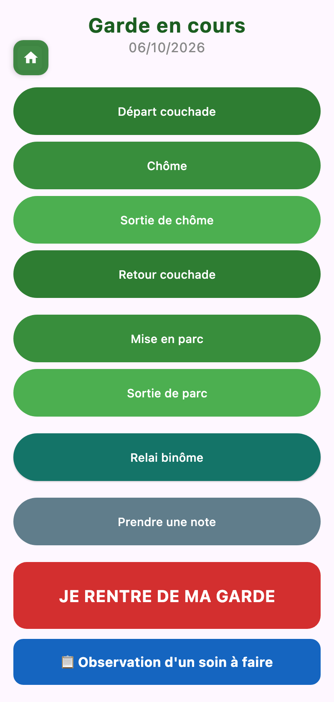
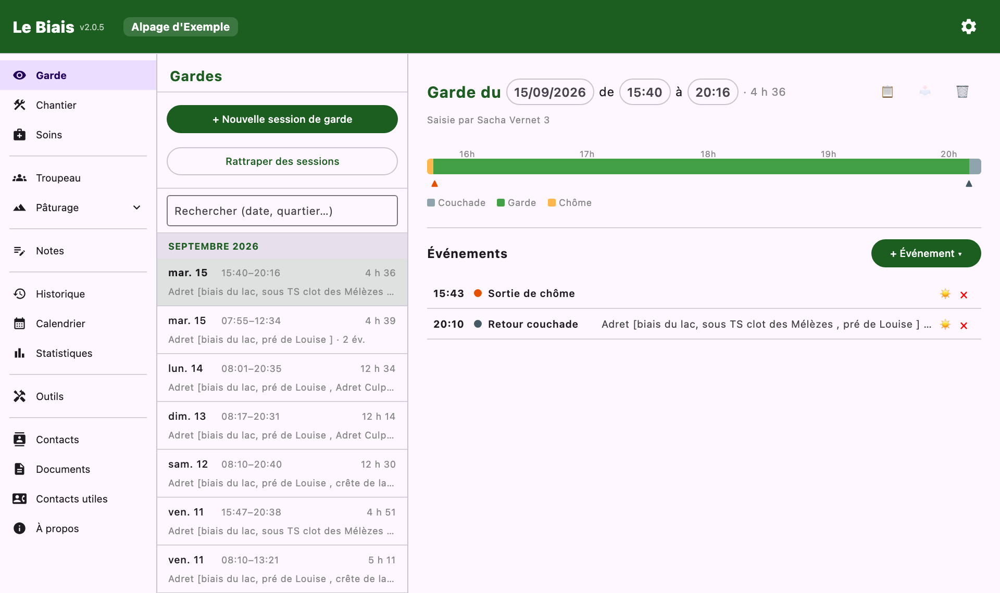
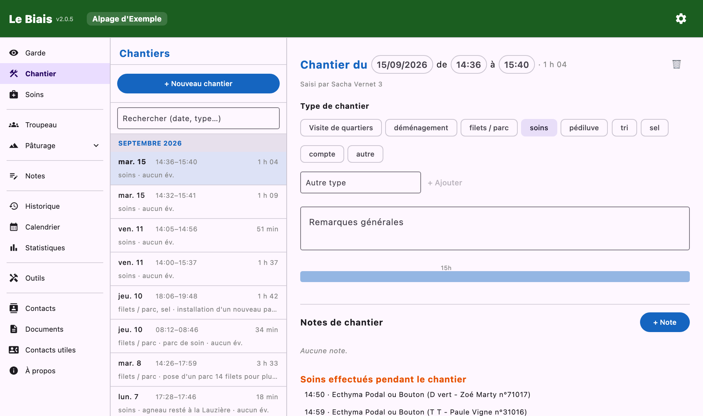

Documentation
Documentation
Pointer ses heures de travail : la garde au fil de la journée, et tout ce qui n'est pas de la garde.
Une session de garde est une journée (ou une demi-journée) auprès du troupeau. Elle a une heure de début, une heure de fin, et une suite d'événements horodatés.
Touchez ▶ Je pars en garde : l'heure de début est prise, modifiable. Tant que la session est ouverte, l'accueil affiche Garde en cours et, si l'option est activée dans les paramètres, une notification permanente la rappelle.
Pendant la garde, un bouton par moment clé :
| Événement | À quoi il sert |
|---|---|
| Départ couchade | Le troupeau quitte la couchade : le temps de parcours commence. |
| Mise en chôme / Sortie de chôme | Encadrent la chôme. L'accueil indique alors « Garde en cours - CHÔME ». |
| Retour couchade | Fin du parcours. |
| Mise en parc / Sortie de parc | Pour les conduites en parc. |
| Relai binôme | Le moment où l'on passe la main. |
| Note de garde | Une remarque libre, à l'heure qu'il est. |
Chaque événement peut porter :

L'écran de garde donne un accès direct à ce qu'on note le plus souvent en marchant : 📋 Observation d'un soin à faire, Bêtes Égarées, Déclarer Décès, Bêtes Remarquables et Chiens de Travail.
Clôturer ouvre le résumé de la garde : date, début, fin, liste des événements. Tout y reste modifiable — on peut ajouter un événement oublié, corriger une heure, supprimer la session.
La liste des gardes se parcourt par mois et se filtre par une recherche (date, quartier…). Sur grand écran, une barre du temps place les événements de la journée sur un axe. 🗺️ Voir le parcours sur la carte rouvre le tracé d'une garde.

Le chantier compte les heures de tout ce qui n'est pas de la garde : soins, pédiluve, tri, pose de filets, aménagements…
Les soins saisis pendant un chantier s'affichent dans son résumé : on voit d'un coup ce qui a été fait ce jour-là. Comme pour la garde, un chantier peut être créé après coup, modifié ou supprimé.

Les statistiques distinguent :
Pointer au fil de l'eau, c'est ce qui donne des fiches horaires solides en fin de saison — et de quoi discuter chiffres en main en cas de désaccord avec l'employeur.